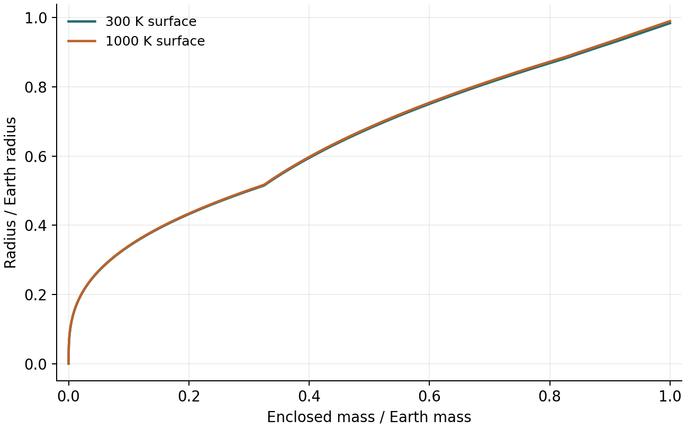
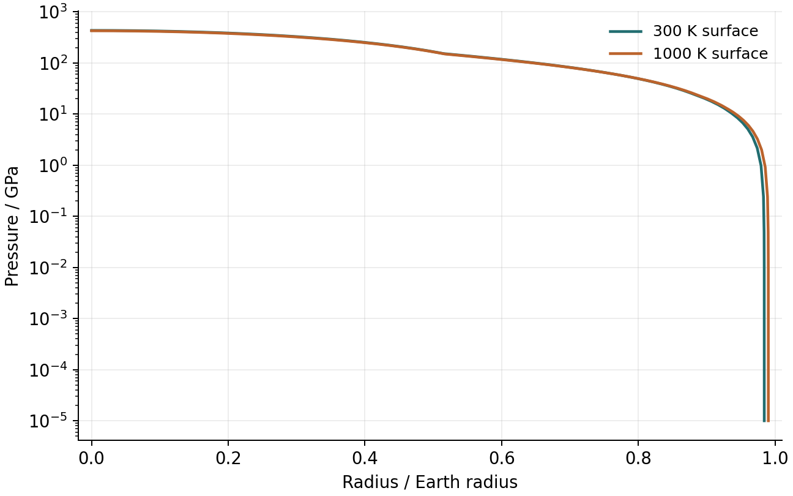
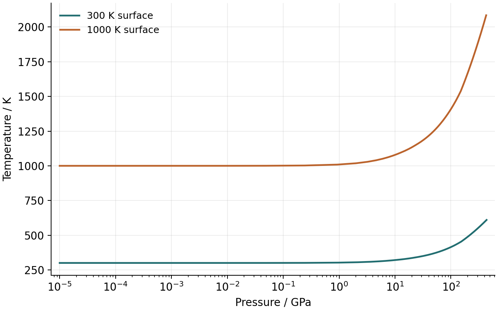
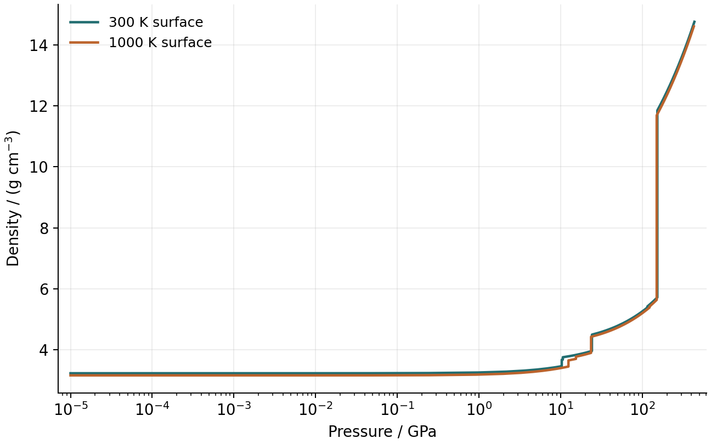
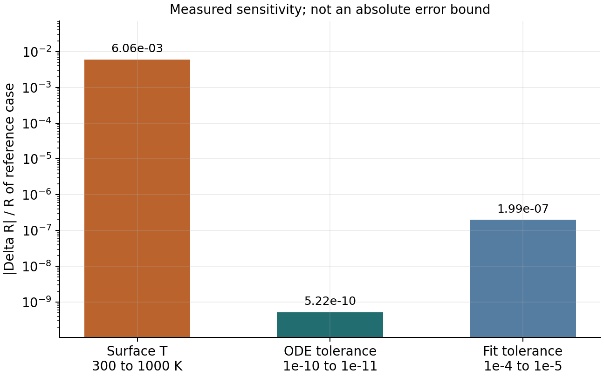

第一次把完整求解链跑通
编译和两个内置测试通过；四个模型均返回正常状态 0。温度对照使半径增大 0.606%，约 38.02 km。
01 · 这次具体算了什么？
使用仓库 mode0.cfg 的类地球案例：总质量 1 M⊕，铁核 0.325 M⊕、岩幔 0.675 M⊕，水层与气层质量均为零。使用 Fe_default、Si_default，三个层间温差均为零，Psurface=10⁵ µbar=10⁻⁵ GPa=0.1 bar。
main 的 mode 0 调用 fitting_method，并传入 isothermal=false；温度沿各材料的热处理计算。Rloop 生成初猜，随后从中心和表面积分，在 Mfit≈0.2 Mtot 处匹配 r、P、T。核幔材料边界位于 0.325 Mtot，与数值匹配点不同。
“类地球”在这里描述质量与核幔比例。300 K 外边界及所用热闭合给出约 610 K 的中心温度；本次没有用地球地温资料校准模型，也没有求解冷却演化。这也不是 TOI-732 c 的模型。
02 · 测试、状态与复现信息
- 原源码编译成功；Vinet EOS 反演和常密度球解析半径测试通过。
- 源码固定在
4c560f36d2734f6b63ae5118d4074e0c255b59f0。 - 环境：Ubuntu 26.04 / WSL 2，g++ 15.2.0，Make 4.4.1，GSL 2.8。
- 原 main 不打印收敛状态，因此只在临时 main 副本中添加 getstatus、半径和中心量的日志。原 fork 科学源码未修改。
- 原可执行文件与日志构建的基准剖面 SHA-256 完全相同。
- 四个案例均检查了有限性、正密度、质量/半径排序、总质量、表面条件和材料边界；未记录错误或警告。
03 · 四个案例的实测结果
| 案例 | 状态 | R / R⊕ | Pc / GPa | Tc / K | 求解耗时 / s |
|---|---|---|---|---|---|
| 基准 · 300 K | 0 | 0.98427109931 | 434.353837 | 610.028191 | 0.539 |
| 温度对照 · 1000 K | 0 | 0.99023249990 | 427.406906 | 2084.969570 | 0.586 |
| 仅 ODE 容限 /10 | 0 | 0.98427109880 | 434.353839 | 610.028321 | 0.618 |
| 在上一项上匹配容限 /10 | 0 | 0.98427090296 | 434.373195 | 610.031105 | 0.703 |
04 · 从图上读结果




基准文件记录的模型标签包括：Fe hcp (Smith)；Si PPv (Sakai)；Brg (Oganov)；Rwd (Dorogokupets)；Wds (Dorogokupets)；Fo/Ol (Dorogokupets)。这些标签标识使用的 EOS/相模型，不应仅凭名字变化就认定发生了严格热力学相变。
05 · 把物理变化和数值变化分别比较
温度实验：只将表面温度从 300 K 改为 1000 K，半径增加 38.02 km，中心压强从 434.354 降到 427.407 GPa。结果与温度通过 EOS 影响密度、结构随之调整的机制相容；没有把这一结果推广到任意组成或气层模型。
积分实验：保持物理输入与匹配容限不变，将 ode_eps_rel1 从 10⁻¹⁰ 收紧至 10⁻¹¹，半径相对变化 -5.223e-10。
匹配实验：在更严格的 ODE 设置下，再将 fit_eps_rel 从 10⁻⁴ 收紧至 10⁻⁵，半径相对变化 -1.990e-07。两次都只改变一个数值设置；这组结果中，匹配容限调整带来的变化更大。

更严格设置下半径变化很小，支持这一个案例在所试设置间相对稳定。仅两次容限比较不能证明精确解已找到，也不能认证材料物理。中心量和材料界面半径也应一起检查，完整数值在 CSV 中。
06 · 你现在可以复现哪一步？
先在 Ubuntu 中打开 D 盘仓库，重新运行现有测试：
cd /mnt/d/GPT/projects/Sub-Neptune/Magrathea make -j4 ./planet --test
模型运行前，复制一份配置并设置新的输出文件名：hydro::print 会追加写入，重复使用同一路径会混入多个模型。本次每个案例都使用独立文件，完整配置与日志保存在 D 盘实践目录。
阅读任务：对照两个温度案例的 T–P 与 ρ–P 图，沿第七、八课的调用链说明温度如何影响最终半径。可以直接带图或函数继续提问，无需先提交答案。
本次验证的范围
本次跑通了编译 → 简单数值测试 → 单模型 → 单变量对照 → 剖面检查与绘图。没有运行 MCMC、连接 HPC 或安装新依赖；没有直接记录三个匹配残差分量，状态 0 来自求解器的返回状态。普通剖面文件经过筛点并按 8 位有效数字输出，高精度半径比较使用临时日志中的值。